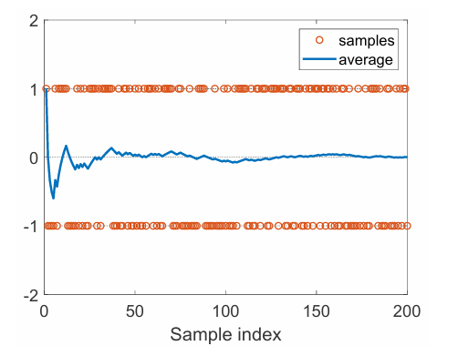
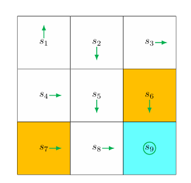
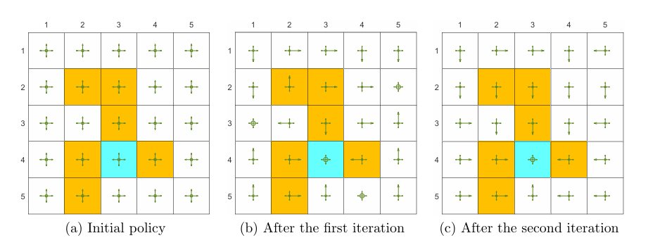
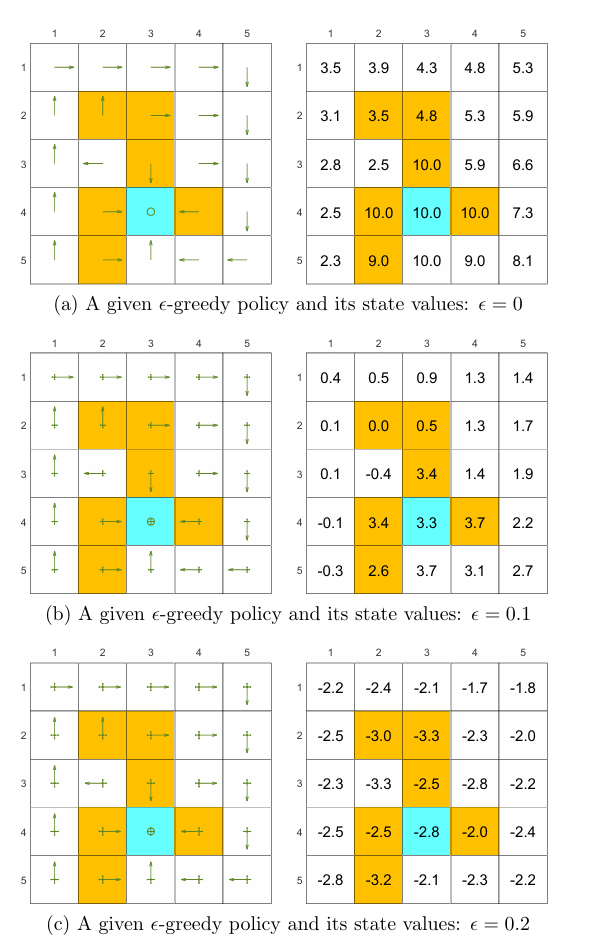
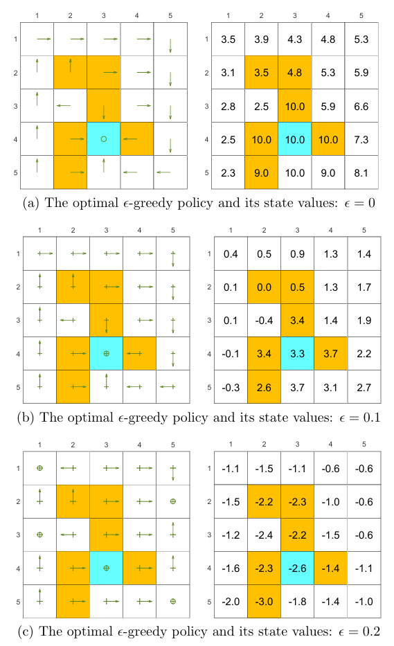
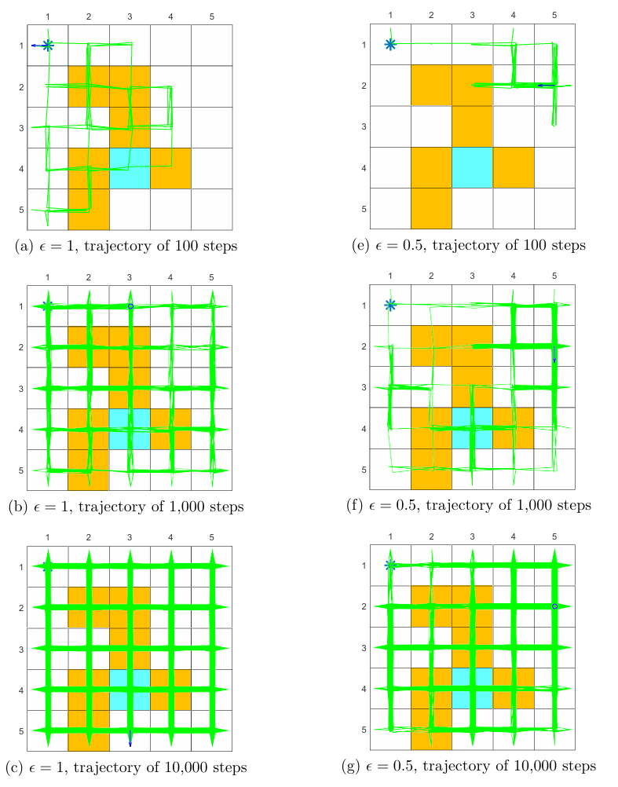

第5章 蒙特卡洛方法
Summary
这一章我们要一起走进无模型强化学习的第一扇门。核心问题是：如果完全没有环境的“说明书”（也就是不知道状态转移概率和奖励分布），我们还能不能学会一个好的策略？答案是——能，只要你有足够多和环境的互动经验。
读完这一章，你需要掌握这些要点：
- 为什么蒙特卡洛方法本质上是“均值估计”问题；
- MC Basic 算法如何用最朴素的采样平均来估计动作价值；
- first-visit 和 every-visit 怎么让样本利用更高效；
- 为什么 exploring starts 很难满足，以及 -greedy 怎样巧妙地用“软策略”替代它；
- 探索与利用之间的张力是什么，以及 的大小如何影响策略的最优性。
蒙特卡洛方法是本书中第一类系统引入的无模型强化学习方法。
Note
这里的“模型”指的就是环境模型，也就是状态转移概率 和奖励分布 。
在之前的策略迭代、值迭代里，我们一直假设自己手里有环境模型。但现实中，很多问题的环境就像一个黑箱——你输入一个动作，它给你下一个状态和奖励，但内部的转移规律你一无所知。这时候怎么办？蒙特卡洛方法给出的思路很直接：没有模型，就用数据；没有公式算期望，就用样本的平均来逼近。
Intuition
你可以把蒙特卡洛方法想象成“试吃评分”。你不知道某家餐厅所有菜品的平均质量，但你可以一道道尝过去，最后给出一个平均分。尝得越多，这个平均分就越接近真实水平。强化学习里的“菜品”就是一条条完整的轨迹（episode），“评分”就是累计回报。
当然，如果既没有模型也没有数据，那谁也没办法。所以无模型学习的基本前提是：要么有模型，要么有数据，二者至少占一样。
5.1 均值估计：从样本学习的基本原理
蒙特卡洛方法的思想，其实可以从一个更基础的统计问题说起——均值估计。
假设我们有一个随机变量 ，取值集合是 ，目标是求它的期望 。这个问题有两条解决路径。
第一条路：知道概率分布。
如果 是已知的，那直接用期望的定义计算就行：
第二条路：不知道分布，但有样本。
如果我们能采集到 个独立同分布的样本 ，就可以用样本均值来近似真实期望：
Intuition
这就像是抛硬币。如果你不知道硬币是公平的，你可以抛100次，记录正面的比例，用它来代替真实的正面概率。样本量小的时候，可能碰巧出现连续10次正面，估计偏差会很大；但随着抛的次数越来越多，这个比例会越来越靠近 。
当样本数量较少时，近似误差可能较大；随着 增加，样本均值会逐渐逼近期望。这一事实由大数定律保证。对于独立同分布样本 ，样本均值满足：
这两个公式揭示了两个核心性质：其一， 是 的无偏估计——它不会在系统性地偏高或偏低；其二，随着样本数增大，估计方差按 的速度减小，估计会越来越稳定。
Example
硬币示例
设抛硬币结果对应随机变量 ：正面记为 ，反面记为 。若已知
则有
若分布未知，只能不断抛硬币并记录样本 ，再计算样本均值
随着样本量增加， 会逐渐向 收敛。

图中的样本轨迹很有趣：单个观测值始终在 之间跳来跳去，但累计平均值会慢慢稳定到真实期望附近。这就像我们生活中做决策，单次结果可能很随机，但长期坚持做正确的事，平均收益终会显现出来。
独立同分布条件
蒙特卡洛估计并不是对任意样本序列都有效。要保证样本均值逼近期望，样本至少要满足独立同分布条件。如果样本之间存在强相关性，均值就可能失真。
Trap
最极端的情况是：后续所有样本都恒等于第一个样本。那无论你采样多少次，样本均值永远只是第一个观测值，根本反映不了真实期望。所以，“样本多”并不足够，样本还必须具备适当的随机性与代表性。
5.2 MC Basic：最基本的蒙特卡洛强化学习算法
5.2.1 从策略迭代到无模型化
让我们回忆一下策略迭代。每一轮包含两个步骤：策略评估与策略改进。对当前策略 ，策略评估通过求解 Bellman 方程得到状态价值：
策略改进则根据动作价值构造贪心策略。其逐状态形式可写为：
如果我们把方括号里的内容记作动作价值 ：
那么策略改进就简化为：
Intuition
你看，动作价值 才是策略评估和改进的核心。模型方法的做法是：先通过 Bellman 方程求出 ，再借助转移概率把 转成 。但如果我们直接估计 ，是不是就可以跳过模型了？
动作价值的定义本身就告诉我们该怎么估计它：
既然这是一个期望，我们就可以用蒙特卡洛平均来估计。假设从 出发，随后按策略 运行，共采集到 条 episode，第 条 episode 的回报记为 ，那么：
这就是蒙特卡洛方法进入强化学习的切入点：用样本回报的平均值，替代基于模型的精确计算。
Note
这里有一个很关键的设计选择：为什么我们要直接估计 而不是 ？
- 如果你只想评估一个固定策略，估计 就够了；
- 但如果你想改进策略，就必须比较不同动作的优劣，这就需要 ；
- 有模型时，即使只估了 ，也能靠模型算出 ；
- 无模型时，只知道 根本不够用，因为你没法前瞻一步比较动作；
- 所以无模型控制必须直接估计 ， 不再是必需的中介。
5.2.2 算法机制
MC Basic 从初始策略 出发，在第 轮迭代中执行两个步骤。
第一步：策略评估。 对每个状态 和每个可行动作 ，从 出发，按照当前策略 采集足够多的 episode，用这些 episode 的回报平均值估计动作价值，记为 。
第二步：策略改进。 对每个状态 ，选择估计动作价值最大的动作：
然后让新策略在这个动作上取概率 ，在其他动作上取概率 ，得到贪心策略 。
graph TD A["当前策略 $\pi_k$"] --> B["对每个 $(s,a)$ 采集 episode"] B --> C["计算平均回报 $q_k(s,a)$"] C --> D["按 $\arg\max_a q_k(s,a)$ 贪心改进"] D --> E["得到新策略 $\pi_{k+1}$"] E --> A
Intuition
MC Basic 和策略迭代的区别只有一处：策略迭代依赖模型先求状态价值，再推动作价值；MC Basic 直接用和环境交互的“亲身经历”（样本 episode）来估计动作价值。所以它不需要环境模型——但它需要你能从任意状态-动作对开始采样，而且每个对都要采足够多的 episode。
当每个状态—动作对都有足够多的起始 episode 时，回报平均值能够精确逼近真实动作价值，因此 MC Basic 继承了策略迭代的收敛思想，能够收敛到最优策略。不过问题在于：这个“充分采样”条件在实践中往往很难满足。 而且它的样本利用效率很低——这让它更像一个“原理演示器”，而不是能直接部署的实用算法。
5.2.3 示例与性质
逐步计算示例

在一个确定性网格环境中，奖励设定为：边界奖励和禁区奖励都是 ，目标奖励是 ，折扣因子 。对状态 而言有五个可选动作 。因为环境和策略都是确定性的，从每个动作出发只需一条 episode 就能得到确切回报。
- 从 出发，轨迹不断回到自身并持续收到 ：
- 从 出发，若干步后进入目标区域并持续获得正奖励：
- 从 出发也可得到同样的回报：
- 从 出发会反复遭受边界惩罚：
- 从 出发，首步回报为 ，后续进入反复惩罚状态：
比较五个动作可得：
所以改进后的策略在 处应选择 或 。这个例子说明，MC Basic 的计算对象始终是“从某个状态—动作对出发的整条回报”，而不是局部的一步转移。
episode 长度与稀疏奖励
在 网格世界中，若 ，，，且 ，MC Basic 的表现会强烈依赖 episode 长度。
Intuition
你可以把 episode 长度想象成“望远镜的倍数”。episode 很短时，很多状态根本来不及看到目标区，对应的回报全为零，价值估计也会是零。只有当 episode 长度逐渐增加，非零价值区域才会像涟漪一样从目标附近向外扩散。
极端地，当 episode 长度为 时，只有紧邻目标的状态能够获得非零价值，远离目标的状态全部被估为零。随着 episode 长度从 、、、 逐渐增加，非零价值区域会从目标附近向外扩散。其空间模式体现出一个本质规律：离目标越近的状态，越早能够在有限长度的 episode 中“看到”正回报；离目标越远的状态，则需要更长的轨迹才能让正回报传递回来。
在这个例子中，从左下角状态到目标的最短有效步数为 ，因此 episode 长度至少应不小于 ，否则某些状态不可能观测到通向目标的正回报。即便如此，episode 也不必无限长；当长度增加到 时，策略已经可能达到最优，只是价值估计尚未完全收敛。
Note
这一现象直接对应稀疏奖励问题。所谓稀疏奖励，是指只有抵达目标时才获得正反馈，中间几乎没有有用信号。在状态空间较大时，稀疏奖励会显著降低学习效率，因为回报信息必须依赖极长的轨迹才能传播到远处状态。一种直接改进方式是将奖励设计为非稀疏形式，例如在目标附近额外设置小的正奖励，从而在目标周围形成“吸引场”，使策略更容易朝正确方向改进。
5.3 MC Exploring Starts：更高效的样本利用
MC Basic 有一个很浪费的地方。假设一条 episode 是：
这条轨迹不仅访问了初始状态—动作对 ，也访问了 、再次访问了 、随后访问了 与 。但 MC Basic 只把整条 episode 用于估计初始的那个 ，后面的访问全被浪费了。
Intuition
这就好比你去餐厅吃了一整顿饭，只给第一道菜打分，后面的菜统统不算数。MC Exploring Starts 的想法是：既然整条轨迹里的每一次访问都是真实的“经验”，为什么不把这些经验都利用起来呢？
5.3.1 访问策略
一次 episode 中，每当某个状态—动作对出现一次，就称为一次 visit。围绕如何利用这些 visit，可以区分三种策略：
| 策略名称 | 做法 | 样本利用效率 |
|---|---|---|
| initial-visit | 只使用 episode 的起始状态—动作对 | 最低 |
| first-visit | 某个 在一条 episode 中第一次出现后的后缀轨迹算作一个样本 | 中等 |
| every-visit | 某个 每出现一次，都把从该次出现开始到 episode 结束的后缀轨迹视为一个样本 | 最高 |
Note
every-visit 策略最充分地利用了样本，但它带来的样本并不独立——同一条 episode 中不同后缀轨迹彼此重叠，后面的子轨迹往往是前面子轨迹的尾部。不过，当两次访问在时间上相距较远时，这种相关性会减弱，因此在实践中仍然有效。
5.3.2 策略更新时机
MC Basic 还有一个低效点：对同一状态—动作对，要先收集一批 episode，等所有样本都齐备后才更新价值估计，再统一改进策略。 这会导致策略更新严重延后。
更高效的做法是：一得到一条 episode，就立刻利用其中的回报更新相关状态—动作对的估计，并即时执行策略改进。 由于单条 episode 给出的估计较粗糙，这种更新不是“精确评估后再改进”，而是落在广义策略迭代的框架内：评估与改进交替进行，且二者都允许是不完全的。
5.3.3 算法结构
MC Exploring Starts 在每条 episode 上直接更新。设当前 episode 为：
算法要求起始状态—动作对 的选择满足 exploring starts 条件，即每个状态—动作对都有可能成为 episode 的起点。
对每条 episode，令累计回报变量初值为 ，然后从后向前递推：
Intuition
为什么要从后向前算？你可以想象自己在回放一段录像，从终点倒着看。每倒退一帧，就把当前的奖励加上之前已经累计的折扣回报。这样只需要维护一个变量 ，就能一次性算出每个时刻的后缀回报，非常优雅。
对当前访问到的 ，维护两个累计量：
- 回报总和
- 访问次数
更新后令：
再在状态 上执行贪心改进：
从后向前计算回报有两个优点：
- 其一，回报可由终点向前递推计算，形式简洁，单条 episode 中各时刻对应的后缀回报都能一次性高效得到；由于整条轨迹已经终止，终止位置及其后的奖励序列均已确定，因此无须分别追踪每个状态—动作对距离终点还有多远。
- 其二，每条 episode 结束后，其中出现的各次有效访问都可以直接用于更新动作价值；若采用 every-visit 方式，则一次采样得到的整条轨迹信息都能被利用，因此样本利用率明显高于 MC Basic。
然而，这一算法仍保留 exploring starts 要求。只有当每个状态—动作对都被充分探索时，动作价值才能被准确比较，最优动作才不会因为估计偏差而被遗漏。 这个条件在物理环境或复杂系统中往往难以满足，因为并非所有状态—动作对都能被任意指定为 episode 起点。
5.4 MC -Greedy：去除 exploring starts 的方法
5.4.1 软策略与 -greedy 策略
exploring starts 的条件太理想化了。现实中，你不太可能随意指定智能体从任意状态—动作对开始一条 episode。那么，能不能让策略自己具备探索能力，从而自然覆盖到所有状态—动作对呢？
这就是软策略（soft policy）的核心思想：只要策略在每个状态下对所有动作都赋予正概率，那么即使只从普通起点反复运行，足够长的轨迹也可能访问大量状态—动作对。
最常见的软策略之一就是 -greedy 策略。设状态 的可选动作集合为 ，其中贪心动作记为 ，则 -greedy 策略定义为：
其中 。
- 当 时，策略退化为纯贪心策略；
- 当 时，各动作概率相同，策略成为均匀随机策略。
Intuition
你可以把 -greedy 想象成一个“有点小叛逆的学生”：大多数时候（概率 ）他会选他认为最好的答案，但有小概率 他会随机瞎蒙一题。这样既保证了他不会一直固执地坚持错误答案，又不会被叛逆心理拖垮整体成绩。
贪心动作概率始终最大，因为：
在实现上，可以先从区间 均匀采样一个随机数 ：
- 若 ，直接选择当前贪心动作；
- 若 ，则在 中均匀随机选取一个动作。
Note
这相当于把贪心动作的概率拆成两份：一份是所有动作共享的 ，另一份是贪心动作独得的 。加起来，贪心动作的总概率就是 ，其余动作都是 。
5.4.2 算法变化
MC -Greedy 与 MC Exploring Starts 的主要差别只在策略改进步骤。
原本贪心改进求解的是：
其中 是全体策略集合。现在约束策略必须属于给定 的 -greedy 集合 ，于是改为：
其解就是相对于当前动作价值估计的最佳 -greedy 策略：对最大值动作赋予较大概率，对其他动作赋予均等且非零的较小概率。算法仍可以沿用 every-visit 方式和逐 episode 的更新机制，但不再要求每个状态—动作对都能作为起始点。
Intuition
Exploring Starts 是靠“强制从每个 起跑”来保证探索；而 -greedy 是靠“策略在已访问状态中的随机探索”来替代这一步。当然，这仍然隐含要求过程本身能够反复访问相关状态，才能实现充分学习。
只要 ，策略就始终保留探索能力，因此 exploring starts 条件被软策略取代。相应地，收敛性质也发生变化：
Note
在样本充分时，算法收敛到的是 中的最优策略，而不一定是全体策略集合 中的全局最优策略。只有当 足够小时， 内最优策略才会逼近真正的贪心最优策略。
5.4.3 单 episode 示例

在 网格世界中，若初始策略是均匀随机策略，每个动作概率均为 ，并且每轮只使用一条长度为一百万步的 episode，那么 MC -Greedy 仍能完成策略改进。示例中取 ，在两轮迭代后即可得到最优的 -greedy 策略。
这个例子说明：只要单条轨迹足够长、策略足够“软”，即使 episode 数量极少，也可能依靠持续访问而估准大量状态—动作对。
5.5 -greedy 策略中的探索与利用
强化学习中的探索与利用构成基本张力。探索要求策略尽可能尝试不同动作，以便获得更全面的价值信息；利用要求策略优先选择当前估计最好的动作，以提高即时表现。 若只利用，可能过早锁定次优动作；若只探索，则会牺牲长期性能。
-greedy 策略正是在这两者之间做概率化折中：以较高概率执行贪心动作，以较低但非零的概率尝试其他动作。
5.5.1 最优性随 增大而下降

在固定一组“主要行动方向”不变的 -greedy 策略中，随着 增加，状态价值会整体下降。原因在于，随机探索比例上升意味着策略更频繁地偏离贪心轨道，从而更容易进入边界或禁区、承受负奖励。
图示中，当 从 增大到 、、 时，状态价值由正值逐渐下降到明显负值，目标附近的价值下降尤为显著。其本质在于：目标状态在贪心情形下最优动作通常是停留并持续获取正奖励，但当随机性过大时，从目标区误入禁区的风险上升，停留反而不再最优。
5.5.2 最优 -greedy 策略未必与贪心最优策略一致

当 时，最优 -greedy 策略就是普通最优贪心策略；当 很小（例如 ）时， 中的最优策略仍可能与贪心最优策略保持一致，即主要动作方向不变，只是在概率上引入轻微随机性。
但当 增大到 或 时， 内真正最优的策略可能改变其主要动作方向，不再与贪心最优策略一致。原因不在于价值估计错误，而在于优化目标本身发生了变化：策略被限制为必须保留较大随机性时，最优行为应主动规避“随机偏离所带来的风险”。因此， 越大，探索越强，但最优性相对于原始问题越弱。
5.5.3 探索能力随 增大而增强

当 时，策略在每个状态下对所有动作赋予相同概率，因此探索能力最强。示例中，一条足够长的单 episode 能多次访问几乎所有状态—动作对，而且访问频数分布比较均匀。
当 时，尽管所有动作仍有被访问的可能，但访问频率会明显不均衡。给定一条长度为一百万步的 episode，某些动作可能被访问二十多万次，而另一些动作仅被访问几十次或几百次。这表明**“可达”不等于“被充分探索”**：随着 下降，策略对贪心动作的偏好越来越强，样本会集中在少数动作上，价值估计的覆盖性随之减弱。
Intuition
所以 的调度常采用先大后小的方式。初期取较大 ，像年轻人一样多尝试、多犯错，避免遗漏优良动作；后期逐渐减小 ，像成熟后专注深耕，使策略更接近真正的贪心最优行为。
5.6 本章总结
蒙特卡洛方法为强化学习提供了一条不依赖环境模型的价值学习路径。其理论基础是均值估计：把状态价值和动作价值视为回报分布的期望，再利用样本平均进行近似。MC Basic 通过“对每个状态—动作对采样并取平均回报”的方式，把策略迭代改写为无模型算法，清楚揭示了模型自由学习的基本思想。MC Exploring Starts 通过 first-visit 或 every-visit 等样本利用机制以及逐 episode 更新，提高了样本效率，但仍要求 exploring starts。MC -Greedy 则进一步用软策略替代强起始条件，使算法在不指定所有起始状态—动作对的情况下仍能持续探索。
这一系列算法展示出一个不断增强的结构：算法越基础，思想越纯粹但效率越低；算法越实用，越需要在样本利用、策略更新与探索机制上引入更复杂的设计。与此同时，-greedy 策略揭示了探索与利用的基本权衡：增大 可以提升访问覆盖性，减小遗漏最优动作的风险，但会牺牲贪心最优性；减小 则有利于利用当前最好动作，却可能削弱探索。
5.7 核心概念辨析
蒙特卡洛估计
蒙特卡洛估计是利用随机样本求解近似问题的一类方法。其关键并不在于“模拟”本身，而在于把目标量写成某个随机变量的期望，再用样本均值逼近这一期望。在强化学习中，被估计的对象通常是回报的期望。
均值估计与价值估计的关系
状态价值与动作价值都定义为累计回报的期望，因此价值估计就是均值估计在强化学习中的具体形式。模型方法通过转移概率与奖励分布直接求期望；无模型方法通过样本 episode 的实际回报取平均来近似期望。
initial-visit、first-visit 与 every-visit 的区别
- initial-visit：只利用整条 episode 的起始状态—动作对；
- first-visit：利用某个状态—动作对在一条 episode 中第一次出现后的后缀回报；
- every-visit：对每次出现都计入一次后缀回报。
三者的差异不在估计目标，而在样本利用粒度。利用越充分，样本效率越高，但样本相关性也越强。
exploring starts 的作用与局限
exploring starts 要求每个状态—动作对都能以足够多的次数作为 episode 起点。其意义在于保证所有动作价值都得到充分评估，从而不致错过真正最优动作。它的局限在于很多实际环境无法随意设置起点，因此需要用软策略来替代这一理想条件。
软策略为何能替代 exploring starts
只要策略在每个状态下对所有动作都保留正概率，足够长的轨迹就可能访问大量状态—动作对。这样一来，探索不再依赖“从每个状态—动作对单独起跑”，而是在单条或少量长轨迹中逐渐完成。这正是 -greedy 方法能够去除 exploring starts 的原因。
-greedy 策略是否最优
-greedy 策略可以在给定 的约束下达到最优，但该最优仅限于 ，未必是全体策略中的全局最优。若 很小，这种差距通常较小；若 较大，最优 -greedy 策略甚至可能与原始最优贪心策略在主要行动方向上不一致。
三种算法之间的关系
- MC Basic：揭示了无模型蒙特卡洛学习的核心思想，即以经验回报平均替代模型化价值计算；
- MC Exploring Starts：在此基础上改善样本使用方式和更新时机；
- MC -Greedy：则进一步用软策略解决探索起点受限的问题。
三者构成了从“基本思想”到“更高效率与更强可用性”的递进关系。